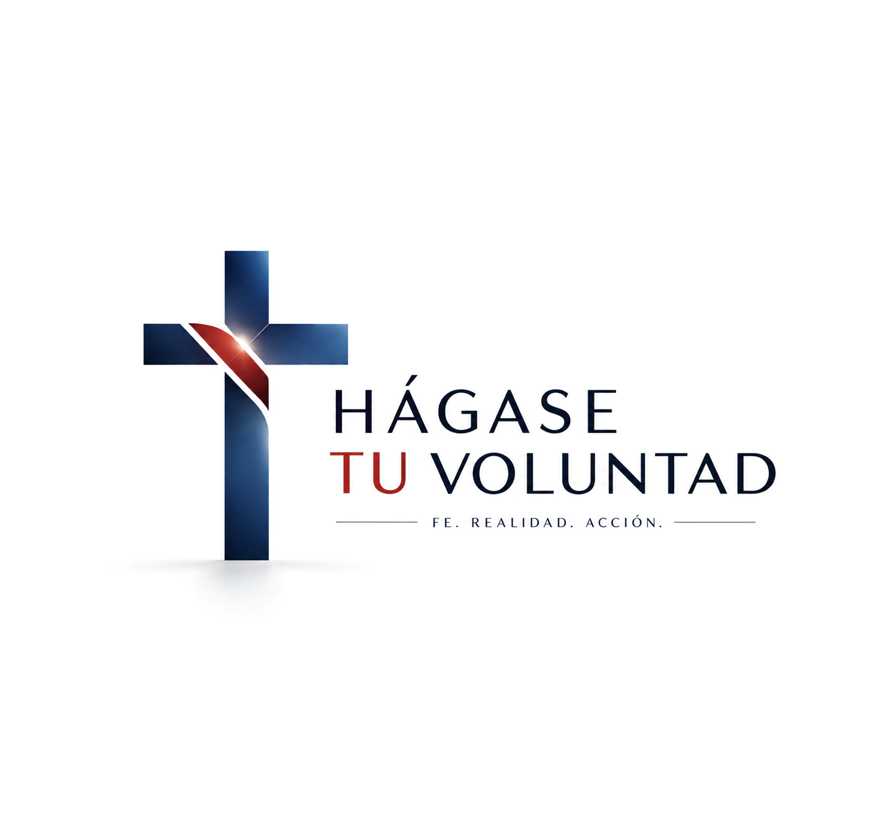
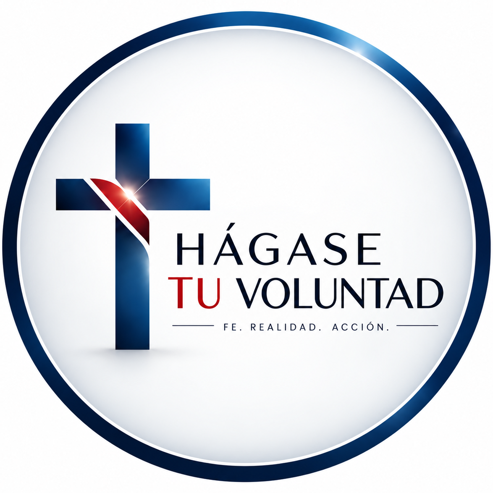

We don't have one life for faith and another for work, one for family and another for money. We are one person living one life. Hágase Tu Voluntad — Thy Will Be Done — is about ordering that life whole, around a single question: am I doing His will?
What this work is, where it looks from, and why it proposes adding nothing to your life.
The diagnosis behind the whole project is fragmentation. A person can work with excellence, earn money honestly, build a successful company, care for a family and practise their faith — and still live in structural disorder. Not because of obviously bad decisions, but because each sphere is governed by a different logic: work by performance, wealth by maximization, the company by growth, leadership by control, the spiritual life by devotion. The problem isn't an absence of good convictions. It's that the convictions don't govern existence as one.
So the proposal isn't to add one more dimension. Not to bring spirituality into work, or values into leadership, or ethics into finance: those additions leave the fracture untouched, because they still assume there are two worlds. The alternative is more demanding: that there be one life and therefore one orientation.
Integration is not balance. It doesn't mean giving every area equal time, or treating every dimension as equally weighty. It means they all answer to one hierarchy. And that hierarchy doesn't remove conflict: it orders it. It doesn't remove uncertainty: it lets you cross it. It doesn't remove sacrifice: it gives it meaning. It doesn't reduce responsibility: it deepens it.
Each level takes its meaning from the one before it and must not subordinate it. This isn't about choosing between God, family, work, company and wealth as though they were independent compartments, but about understanding what place each one holds within the whole.
The vision is expressed through three vehicles. The book founds it, giving it structure and permanence. The podcast develops the living thought and puts it in conversation with reality. The talk meets: it concentrates, confronts and brings the vision into direct contact with real people. One vision, three vehicles, one question.
Identity, dignity, character, virtue, freedom, interior life, discipline, success, failure and suffering.
Purpose, calling, capabilities, ambition, profession, discernment, mission and renunciation.
Profession, excellence, productivity, entrepreneurship, creation, service and responsibility.
Power, teams, culture, growth, governance, incentives and responsibility over others.
Money, investment, ownership, consumption, risk, inheritance, generosity and stewardship.
Technology, AI, education, economy, innovation, society, science and transformation.
Family, community, formation, institutions, transmission, continuity, impact and legacy.
The founding work, where the vision is developed in full. Direct PDF download, free of charge.
How to order a single life: the person, the calling, the work and what has been entrusted to us.
The book draws a line between what a person claims to believe and what actually governs their decisions. The real architecture of a life isn't found in its declarations but in the decisions that carried a cost. So it doesn't ask what you value. It asks which principle wins when two goods come into conflict.
Its backbone is a sequence that is not a productivity formula but a claim about the real order of things: BEING → DOING → HAVING. The person precedes their work, and their work precedes their possessions. Inverting that order — I have an estate, therefore I am someone; I have a title, therefore I am worth something — places an entire identity on variables that can be lost. The book calls this an extreme concentration of risk.
And it makes no promise that ordering your life will produce more money, more recognition or better outcomes. It warns expressly that it may produce less of all three. It doesn't say «do God's will and things will go better for you». It says something harder: do what is right even when you cannot guarantee the result will favour you.
The cycle doesn't end: it returns to the beginning. An integrated life isn't about settling once and for all what to do, but about building the capacity to keep returning to the right question.
Surrender doesn't mean abandoning responsibility. It means separating responsibility from control: doing what is right and then handing over the result, so that legitimate responsibility doesn't turn into a claim to govern reality.
Download the book (PDF)Catholic formation for the layperson living in the real world: family, work, business, leadership, money, culture and responsibility.

Here faith isn't decorative, and it isn't kept apart from life. It is the criterion for deciding, working, leading, administering, exercising authority and guarding what God entrusts. Most episodes are development episodes — Mario thinking out loud about a question that matters — and a smaller share are conversations. We don't look for interesting guests. We look for necessary conversations.
It speaks to people who have something to build, something to decide and something to administer, and who are starting to ask for whom and for what they are doing it. Founders, executives, professionals, investors, leaders and anyone carrying real responsibility for others.
The path is that of the disciple who is formed, the apostle who is sent, and the steward who administers responsibly what he has received.
Subscribe on YouTubeIt is no substitute for the sacramental life, doctrinal formation, spiritual direction or the life of the Church. It doesn't hand out ready-made certainties: it offers criteria for discernment.
The in-person expression: companies, universities, institutions, leadership groups, Catholic communities, congresses and gatherings.
A Hágase Tu Voluntad talk is not a motivational speech, not a corporate talk in religious language, and not a summary of the book. It is a space for thought, formation and confrontation in which one concrete human reality is looked at from a vision of a whole life ordered to God.
The audience isn't defined by age, profession or income, but by one condition: responsibility. The person who has something to build, something to decide and something to administer, and who is beginning to ask for whom and for what they are doing it. The audience changes the point of entry, not the centre.
There are two ways to bring it into a room. The keynote leads: defined direction, tighter curation, greater intensity. The conversation accompanies: closer and more dialogical, with participation in service of the question. Neither is a lesser version of the other; each is a different relationship with the room.
One question, one tension, one distinction and one invitation. For forums, universities and multi-speaker gatherings.
Close and dialogical. Improvisation happens inside a prepared architecture.
The flagship format. It moves through question, reality, tension, idea, distinction, order, decision and life.
With interaction, cases, exercises and applied work. For leadership teams and formation groups.
What a talk should help separate. Almost all disorder begins by confusing one of these pairs.
Presents the full vision and the central question that runs through the whole work.
The difference between efficiency and direction: why not everything possible should be done.
Company, culture, growth and the common good. What human reality the structure you lead is producing.
Available in English and Spanish, in person or online.
This work has a sister. Same three vehicles, same rigour, a secular register.
ineXorable works the same material from outside the faith: how to build a life, a body of work and an estate that don't depend on the world cooperating. It deals with structure, margin, dependencies and the capacity to keep deciding when conditions change. All of that remains true here, and is assumed throughout these pages.
The difference isn't subject matter but destination. ineXorable ends in agency: what can I do now that wasn't possible before. Hágase Tu Voluntad takes that capacity and adds two things the other framework cannot supply on its own: a direction — being able isn't enough, you have to ask whether it is right — and a limit — surrender, which separates responsibility from control.
If you're arriving from somewhere faith isn't yet part of the conversation, that is the way in.
How to build a life, a body of work and an estate that don't depend on the world cooperating. Book, podcast and talks.
The rest of the ecosystem.
The Hágase Tu Voluntad newsletter: Catholic formation for the layperson living in the real world, delivered to your inbox.
Hágase Tu Voluntad is one of seven apostolates. Here are the other six.
This same page, in Spanish.
Personal landing page: contact, documents and the rest of the projects.
Antifragility architecture for the leader, the company and the estate.